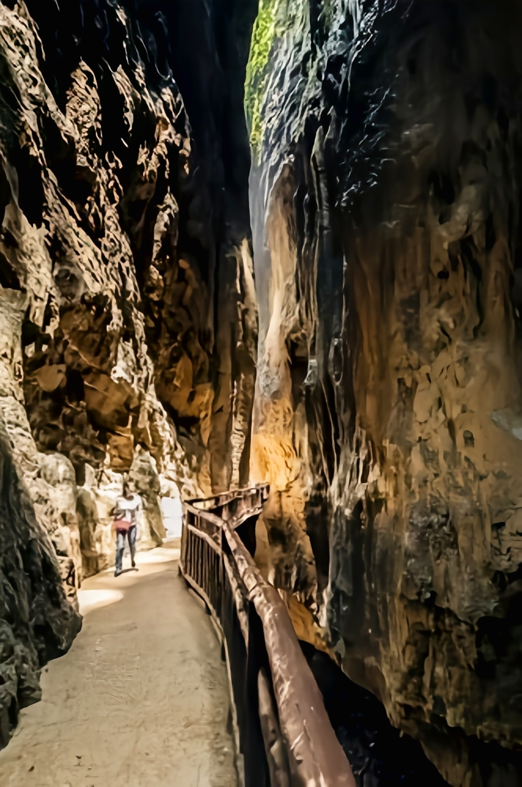
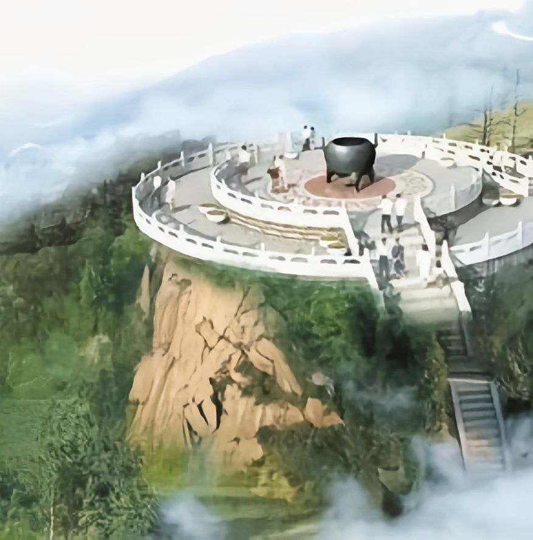
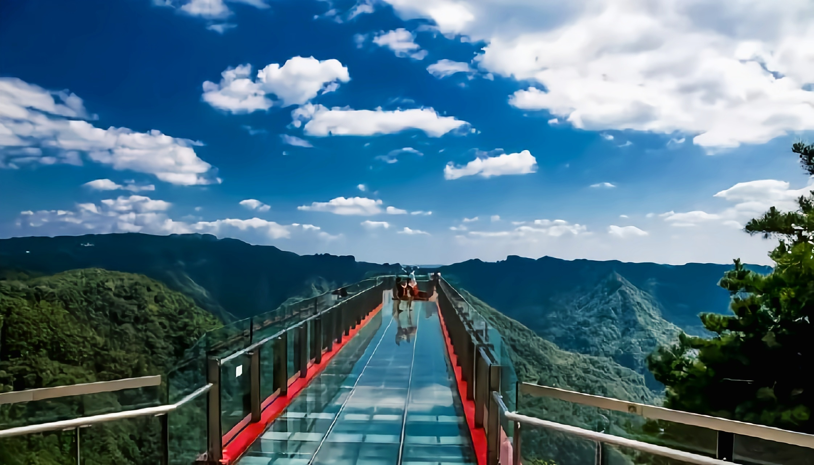

成渝经济区东部中心城市
涪陵
是重庆市辖区之一，地处重庆市中部、三峡库区腹
地，扼长江、乌江交汇要冲，历来有川东南门户之称。
经济上处于长江经济带、成渝地区双城经济圈、乌江干
流开发区、武陵山扶贫开发区的结合部，有承东启西和
沿长江、乌江辐射的战略地位，是重庆主城都市区重要
战略支点城市、重庆一小时经济圈核心城市、成渝经济
区东部中心城市。
涪陵二字取自“涪水之滨，巴王之陵”。春秋战国
时曾为巴国国都，秦昭襄王三十年（前277年）置枳县。
1997年3月14日，原四川省涪陵市、万县市、黔江地区
并入新成立的重庆直辖市。1997年12月20日，经中共中
央办公厅和国务院办公厅批准，撤销原地级涪陵市和枳
城区、李渡区，设立重庆市涪陵区。
|  | 武陵山大裂谷，位于长江上游地区、重庆涪陵区城东南约40公里的武陵山旅游度假区中南段，系国家4A级旅游景区。 |
|  | 雨台山是古时人们求雨的地方，因祈雨而得名，有丰富的祈雨文化。雨台山位于重庆市涪陵区城东12公里，距重庆主城区约90公里，最高峰海拔862米，是古代干旱时人们祈天下雨的地方。是以祈雨文化为特色，集观光游览、养生度假、商务会议为一体的福地仙境。 |
|  | 重庆武陵山国家森林公园位于重庆市涪陵区国有大木林场，国家4A级旅游风景区，巴渝十二景之一，面积为1633.33公顷。森林公园地处中亚热带，属湿润的季风气候类型，年均温度9.9℃，夏季平均气温20℃左右。植被类型为亚热带常绿落叶、阔叶林，森林覆盖率达95.2%。森林公园划分为6个大片区、30个景点、3个接待中心、5个游乐场所。 |